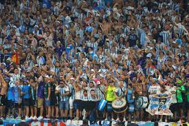
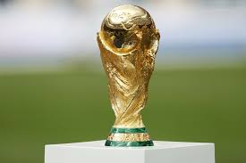
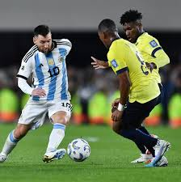

Acompanhe tudo sobre a Copa do Mundo 2026, história das seleções e momentos inesquecíveis do futebol.
Ver detalhes da CopaEste site foi criado para mostrar informações sobre a Copa do Mundo, destacando seleções históricas como a Argentina e os maiores momentos do futebol mundial.


Primeira edição com 48 seleções.
Uma das maiores seleções da história.

Partidas históricas e finais inesquecíveis.
Primeira Copa com 48 seleções da história.
Veja as maiores seleções e campeões.
Partidas inesquecíveis e finais épicas.